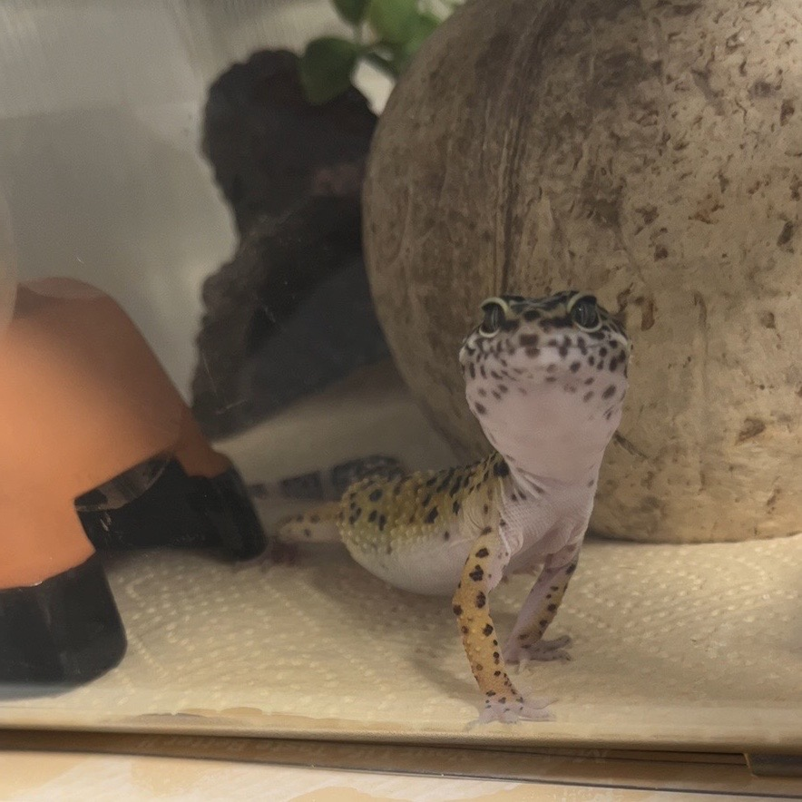

표범도마뱀붙이(Eublepharis macularius)는 레오파드 게코, 커먼 레오파드 게코(Common leopard gecko)라고도 불리며, 자연적으로 아시아, 아프가니스탄을 거쳐 인도 북부에 이르는 고지대에 서식하는 훈행성(en:Cathemerality) 육상 도마뱀이다. 대부분의 도마뱀붙이류와 달리, 속 전체가 눈꺼풀이 있고, 발에 빨판이 없어 매끄러운 표면을 기어오르지 못한다. 제일 널리 사육되는 도마뱀 중 하나이며, 애호가들은 레오파드 게코를 줄여서 레게라고 부른다.
